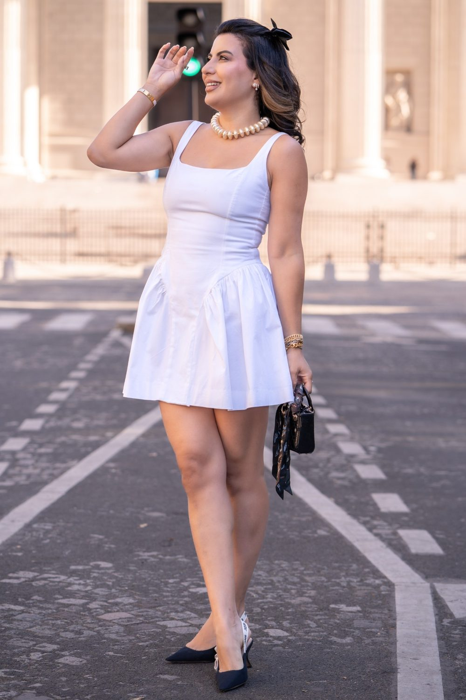
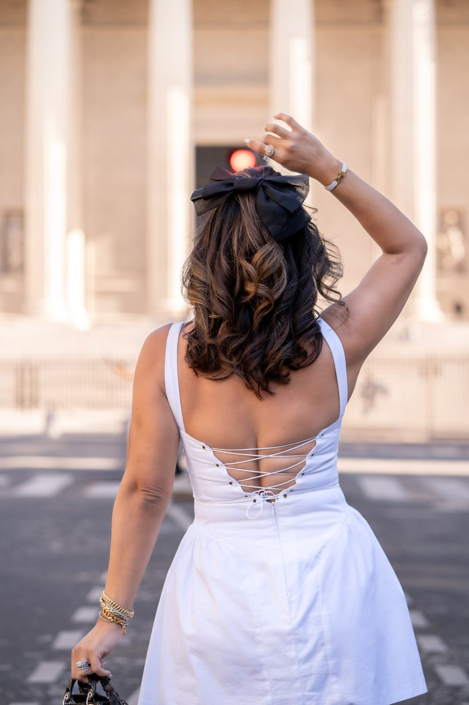
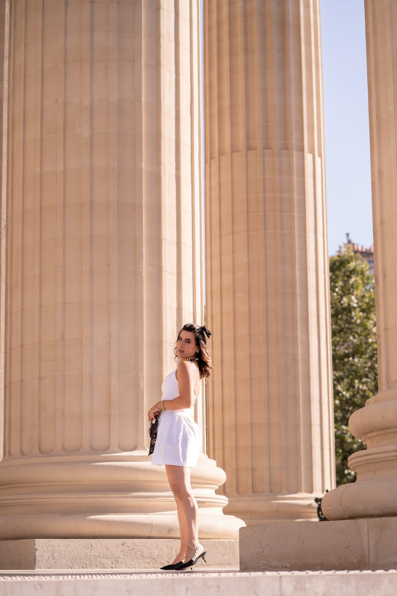
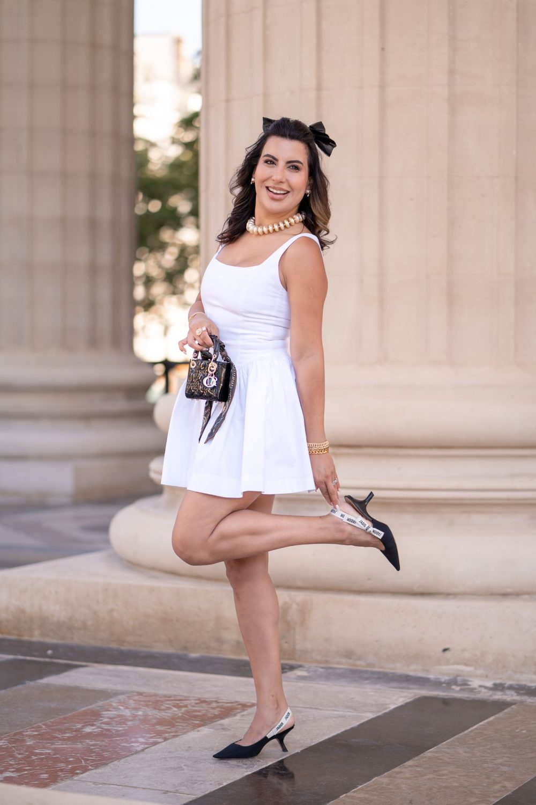
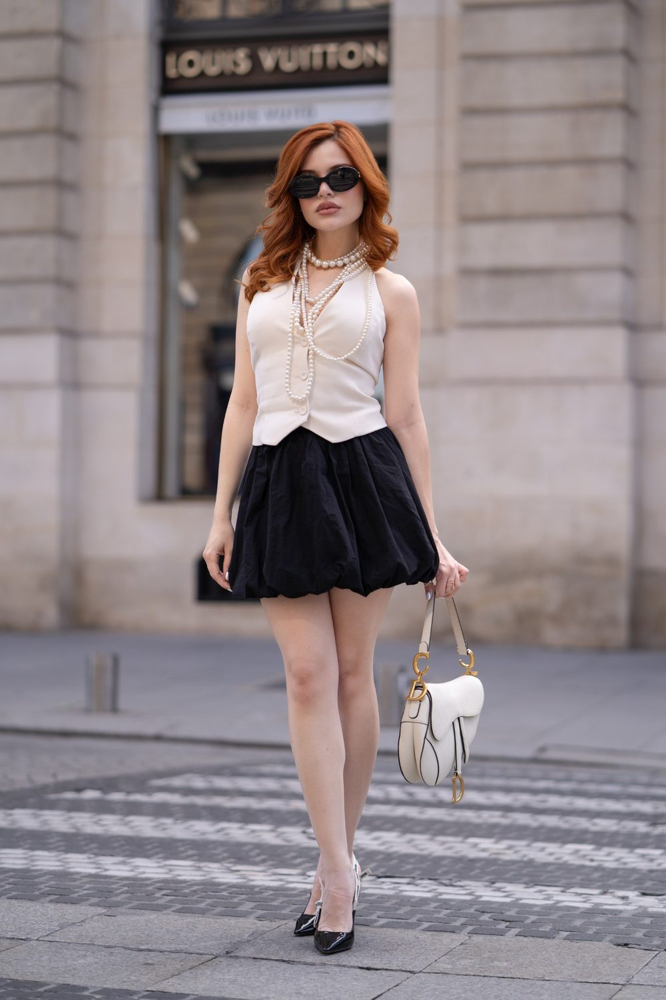

Portrait solo à Joinville-le-Pont
Un portrait de vous, pour vous : un beau jour, une envie, un cap passé. Une séance solo se vit comme une promenade où vous reprenez la place centrale. Une séance à Joinville-le-Pont, c'est aussi la possibilité de varier les ambiances entre Quartier de Polangis et Parc du Parangon.

Où faire votre shooting
Un portrait solo à Joinville-le-Pont se vit comme une promenade, de l'Île Fanac aux pontons des Bords de Marne. Seul face à la rivière, on respire autrement. La séance démarre sur l'Île Fanac, où les arbres encadrent votre silhouette. Les pontons des Bords de Marne invitent ensuite à des poses assises, regard tourné vers l'eau. Le Quartier de Polangis apporte un décor de pavillons et de jardins pour changer de tenue et d'ambiance. Un petit film rythmé garde l'allure de votre marche.
Nos lieux pour cette séance
Quartier de Polangis
Pavillons et jardins. Une rue au caractère affirmé pour un portrait urbain et naturel.
Parc du Parangon
Parc ombragé. Un jardin ou un parc pour un portrait doux et lumineux, avec de la verdure derrière vous.
Île Fanac
Île boisée sur la Marne.
Bords de Marne
Promenade et pontons.
Pour que tout se passe bien
Détendu, au bord de l'eau, avec des îles. La Marne est calme en début de matinée.
Pas besoin d'être modèle. Nous vous aidons à trouver votre posture, à choisir des tenues, à passer de la gêne au naturel. Nous parlons, nous marchons, nous laissons les images venir.
Arrivez tôt le matin sur les Bords de Marne : la Marne est calme et les promeneurs rares, ce qui aide à se sentir à l'aise devant l'objectif. Apportez deux tenues pour le passage dans le Quartier de Polangis.
À Joinville-le-Pont, vous êtes à RER A Joinville-le-Pont : nous préparons l'itinéraire entre les lieux avec vous.




Avant de nous écrire
Où faire un shooting portrait solo à Joinville-le-Pont ?
Un shooting portrait solo à Joinville-le-Pont peut alterner l'Île Fanac pour l'ambiance boisée, les pontons des Bords de Marne pour des poses au bord de l'eau, et le Quartier de Polangis pour un décor de pavillons.
Faut-il être à l'aise devant l'objectif pour un portrait solo à Joinville-le-Pont ?
Pas besoin d'être à l'aise devant l'objectif : le portrait solo à Joinville-le-Pont se vit comme une promenade le long de la Marne. Nous vous guidons pas à pas, et la marche entre les spots aide à oublier l'appareil.
Comment venir à Joinville-le-Pont ?
RER A Joinville-le-Pont. Nous nous déplaçons avec notre matériel photo et vidéo.
Peut-on faire la séance en intérieur ?
Oui, si le lieu a de la lumière naturelle. Un studio léger peut aussi être installé chez vous.
Parlons de votre mariage
Demander un devisSolo ailleurs en Île-de-France
© Le Couple Photographe · Photographe de mariage Paris & Île-de-France · Mis à jour le 10 octobre 2026
Demander un devis